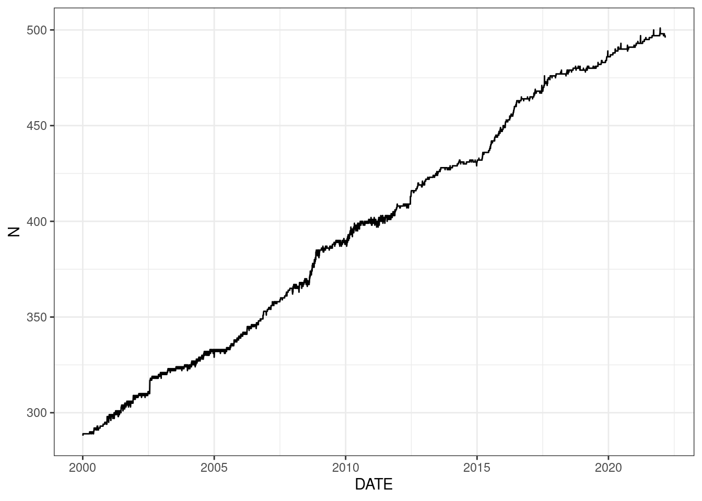
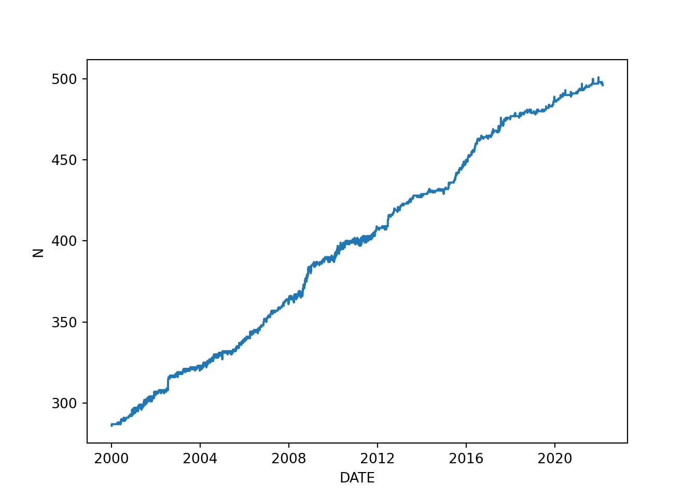

This is a brief post where we fetch and prepare some stock market data that we will be using later on subsequent posts. Fetching and preparing data are without doubt two key steps in any data-driven process, but they are not going to be a major topic in this blog. Nevertheless, we are going to separate this into an independent post where we will cover along the way few important points regarding this type of data.
In particular, we are going to:
Scrape a list of the largest publicly traded companies in the US (point-in-time S&P 500 constituents).
Download stock market data for those companies (from Yahoo! Finance).
Clean and prepare the data for later use.
1. Load S&P 500 constituents
Our intention is not to build a process for precise backtesting and/or putting into production any realistic stock trading model. The main reason we picked market data is because it represents a good example of time series, but, given that we are going to use it, we will also emphasize some important points when working with this type of data.
First, we need to decide the set of companies (or universe) that we want to use in our study. In this case, we will work with the 500 largest publicly traded companies in the US, as tracked by the S&P 500 index.
Caution
It is very important to note that this universe of companies changes over time – constituents of the index can be removed and substituted by others. If we want to do avoid any survivorship bias when looking into the behavior of the universe over time, we should properly cover those changes point-in-time.
Since our post has only illustration purposes we are not going to cover this perfectly but we will do what we can by looking into the information available in the S&P 500 Wikipedia page.
In order to do that, we will automatically read & load the tables from that page directly into our working environment. There are plenty of ways to scrape data from a website, here we use already-implemented packages that deal with all the parsing for us:
library(data.table)library(htmltab)url ="https://en.wikipedia.org/wiki/List_of_S%26P_500_companies"table1 =data.table(htmltab(url, which =1))table2 =data.table(htmltab(url, which =2))table1[1:2, c(1,7)]
Symbol Date first added
1: MMM 1976-08-09
2: AOS 2017-07-26
table2[1:2, c(1,4)]
Date Removed >> Ticker
1: March 2, 2022 INFO
2: February 15, 2022 XLNX
import requestsimport pandas as pdurl ="https://en.wikipedia.org/wiki/List_of_S%26P_500_companies"re = requests.get(url)tables = pd.read_html(re.text)table1 = tables[0]table2 = tables[1]table2.columns = ["_".join(a) for a in table2.columns.to_flat_index()] table1.iloc[:2, [0,6]]
Symbol Date first added
0 MMM 1976-08-09
1 AOS 2017-07-26
table2.iloc[:2, [0,3]]
Date_Date Removed_Ticker
0 March 2, 2022 INFO
1 February 15, 2022 XLNX
Note that we have two tables, one with the starting date when the companies where included into the index and the other with the ending date when some of the companies where removed. In order to have a point-in-time coverage of the index we extract both dates and join them into a table/dataframe. Like this we expect to have, for each company, the starting date and end date (if any) when they entered and left the index over time.
Note
We are going to use the tickers (symbols) as the company identifier, since this is all we have, other than the name, from the Wiki page. This is not a very good practice since tickers can change over time and can be reused for different companies, but we will ignore any potential issues here.
TICKER START_DATE END_DATE
13 A 2000-06-05 NaT
618 AA NaT 2016-11-01
Just by looking at the both initial rows it becomes obvious that we have instances where END_DATE is not available – we can assume this means that those companies are still constituents of the index as of today; we will populate these with a future time to avoid any issues when using the table (e.g. “2111-11-11”). We also have many instances where START_DATE is missing – similarly, we can assume here that these companies have been in the index since the beginning; we can populate this with any date prior to the dates we are interested in (we will just pick the oldest date available in the table).
Unfortunately, there are few tickers with multiple END_DATEs: these could represent companies that have been incorporated and removed from the index several times, or, as we discussed earlier, mean that a ticker is being reused for a different company. Either case, we are missing some information: we don’t have any of the corresponding START_DATEs. Because there are very few cases and we don’t intend to have very accurate results anyway, we will simply take the last END_DATE and assume this ticker represents a company that was inside the index up until that date. In order to do that we simply get the row with maximum END_DATE per TICKER.
TICKER START_DATE END_DATE
13 A 2000-06-05 2111-11-11
618 AA 1957-03-04 2016-11-01
2. Get stock market data
Now that we have a point-in-time version of the S&P 500 index, with all its constituents over time, we can move to retrieving the market data. We will use Yahoo! Finance and its internal API to request historical stock market data.
Note
The format of the queries to request data may change in the future. In order to figure this out, you can navigate into the website to manually request some data and check the URL that appears in the Download button by Inspecting the website/entering the Web Developer Tools. For example, for this, the corresponding Request URL at the moment of writting this post is https://query1.finance.yahoo.com/v7/finance/download/AAPL?period1=1640476800&period2=1648252800&int
In particular, we will get the default daily pricing and trading volume data from “2000-01-01” to “2022-03-01” for all the companies in the index (if available). We have to request data company by company so we loop over all available tickers:
startDate =as.POSIXct("2000-01-01",tz ="GMT")endDate =as.POSIXct("2022-03-01",tz ="GMT")marketDT =NULLfor(ticker in sp500DT$TICKER){ url2 =paste0("https://query1.finance.yahoo.com/v7/finance/download/", ticker,"?period1=", as.integer(startDate),"&period2=", as.integer(endDate),"&interval=1d&events=history" ) marketDT0 =tryCatch( {read.csv(url2)},error =function(e){return(NULL)},warning =function(w){} )if(!is.null(marketDT0)){setDT(marketDT0) marketDT0[ , TICKER := ticker] marketDT =rbind(marketDT, marketDT0)rm(marketDT0) }Sys.sleep(5) # to avoid issues with request limits we slow down the process}names(marketDT) =toupper(names(marketDT))setkey(marketDT, DATE, TICKER)
marketDT[1:2]
DATE OPEN HIGH LOW CLOSE ADJ.CLOSE VOLUME TICKER
1: 2000-01-03 56.330471 56.464592 48.193848 51.502148 43.812588 4674353 A
2: 2000-01-03 99.724503 100.400345 96.570564 97.246407 71.984177 1291386 AA
import timestartDate = pd.to_datetime("01-01-2000"))endDate = pd.to_datetime("03-01-2022"))marketDF = pd.DataFrame()for ticker in sp500DF.TICKER: url2 = ("https://query1.finance.yahoo.com/v7/finance/download/"+ ticker+"?period1="+str(int(startDate.value /1000000000)) +"&period2="+str(int(endDate.value /1000000000)) +"&interval=1d&events=history")try: marketDF0 = pd.read_csv(url2)except:passelse: marketDF0['TICKER'] = ticker marketDF = marketDF.append(marketDF0) time.sleep(5) # to avoid issues with request limits we slow down the processmarketDF.columns=marketDF.columns.str.upper()marketDF = marketDF.sort_values(by = ['DATE', 'TICKER'])
marketDF.iloc[:2]
DATE OPEN HIGH ... ADJ CLOSE VOLUME TICKER
972402 2000-01-03 56.330471 56.464592 ... 43.812580 4674353.0 A
358542 2000-01-03 99.724503 100.400345 ... 71.984161 1291386.0 AA
[2 rows x 8 columns]
3. Clean and prepare the data for later use
We are missing 102 from 775 companies. All of them are companies that have been removed from the index, so missing them could introduce survivorship bias. At least few of them are companies that have been acquired by another and Yahoo does not seem to track them in a point-in-time fashion, so the old tickers and corresponding market information have been lost. We will not spend time looking into this, we just want a reasonable sample of market data for illustration purposes.
As final steps, we:
transform the data to the correct format.
remove rows with missing information (e.g. dates that were returned with NULLs).
measure daily close to close returns. It is important to use Adjusted Close Prices (ADJ.CLOSE) for this, as they incorporate adjustments for splits and dividends.
remove some of the bad data. There are plenty of issues (e.g. wrong prices) in the Wikipedia market data, we would not recommend to use it for serious research. We are not trying to solve any of those issues here so we will simply remove any daily returns larger than 1 (100% increase) or smaller than -0.8 (80% drop).
make the market data time sensitive over the index constituents (currently we have information for the full period of time, if available, for all companies, regardless of when they entered or left the index).
marketDT[ , DATE :=as.Date(DATE)]namesCol =names(marketDT)namesCol = namesCol[!namesCol %in%c("DATE", "TICKER")]marketDT[ , (namesCol) :=lapply(.SD, as.numeric), .SDcols = namesCol]marketDT = marketDT[complete.cases(marketDT)]# measure daily returnsmarketDT[, ADJ.CLOSE_o :=shift(ADJ.CLOSE, 1, type ="lag"), by = TICKER]marketDT[, RET:=(ADJ.CLOSE - ADJ.CLOSE_o) / ADJ.CLOSE_o, by = TICKER]marketDT[, ADJ.CLOSE_o :=NULL]# "remove" some bad data by converting to NA de daily returnsmarketDT[RET >1, RET :=NA]marketDT[RET < (-0.8), RET :=NA]# add start and end dates and filter for a point-in-time indexmarketDT =merge(marketDT, sp500DT, by ="TICKER")marketDT = marketDT[DATE >= START_DATE & DATE <= END_DATE]
# save datadirPath ="YOUR_DIRECTORY_PATH"# Put here your pathfwrite(marketDT, paste0(dirPath, "marketDT.csv"))
marketDF['DATE'] = pd.to_datetime(marketDF['DATE'])marketDF = marketDF.dropna()# measure daily returnsmarketDF['ADJ CLOSE o'] = marketDF.groupby('TICKER')['ADJ CLOSE'].shift(1)marketDF['RET'] = (marketDF['ADJ CLOSE'] - marketDF['ADJ CLOSE o'])/marketDF['ADJ CLOSE o']marketDF.drop(columns ='ADJ CLOSE o', inplace =True)# "remove" some bad data by converting to NA de daily returnsmarketDF.loc[marketDF.RET >1, 'RET'] = pd.NAmarketDF.loc[marketDF.RET < (-0.8), 'RET'] = pd.NA# add start and end dates and filter for a point-in-time indexmarketDF = pd.merge(marketDF, sp500DF, how ="left", on = ['TICKER'])marketDF = marketDF[(marketDF.DATE >= marketDF.START_DATE) & (marketDF.DATE <= marketDF.END_DATE)]
# save datadirPath ="YOUR_DIRECTORY_PATH"# Put here your pathmarketDF.to_csv(dirPath +"marketDF.csv" , index=False)
As a last checkup, we look into the number of companies in the index for which we have pricing information in the table:
library(ggplot2)NDT = marketDT[!is.na(RET)][, .N, by = DATE]ggplot(NDT) +geom_line(aes(x = DATE, y= N )) +theme_bw()

import seaborn as snsNDF = marketDF[~marketDF.RET.isna()].groupby('DATE').size().reset_index(name ='N')sns.lineplot(x ='DATE', y ='N', data = NDF)

Unfortunately, the numbers are not looking very good; there is a clear deterioration of the index when moving backwards in time. This clearly hints towards survivorship bias, which could affect all our results and jeopardize any of the conclusions. As already mentioned above, we are only going to use this data as a sample, but we still wanted to point out the potential issues when using low quality data.